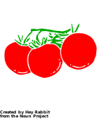

Happy plants
pH & moisture targets for quick daily checks
| Plant | Ideal pH | Soil moisture (%) |
|---|---|---|
| Basil Ocimum basilicum |
6.0-7.0 |
60% 75%
|
| Sage Salvia officinalis |
6.0-7.0 |
40% 55%
|
| Cherry tomatoes (varieties) |
6.0-6.5 |
60% 80%
|
| Cat grass (oat/barley/wheat grass) |
6.0-7.0 |
65% 85%
|
|
Mint
(Mentha spp.) |
6.0–7.0 |
70% 85%
|
Notes:
- Basil and cherry tomatoes like steady moisture but not waterlogged soil
- Sage prefers drier conditions, so let the soil dry out a bit between waterings
-
 Cat grass likes consistently moist
soil,
especially when young
Cat grass likes consistently moist
soil,
especially when young
- Cherry tomatoes can tolerate a bit more moisture, especially in warmer weather
- Adjust pH with organic amendments like lime (to raise) or sulfur/vinegar (to lower)
- aim for the lower end of moisture targets
- aim for the higher end of moisture targets